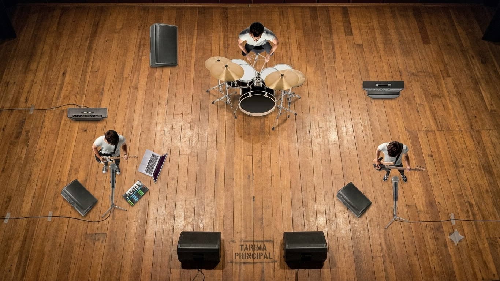

01
Requisitos básicos
- Caja directa (DI) para secuencias
- Micrófono para 1era voz
- Micrófono para 2da voz
- Batería de 5 piezas
- Amplificadores: 1 para bajo · 1 para guitarra
02
Monitoreo y mezcla
- Retorno / monitoreo para los 3 músicos (según la sala)
- Prueba de sonido previa al show, acordada con producción
03
Nota importante
Es de vital importancia adaptar cualquier especificación técnica a la banda con previo acuerdo. Escríbenos y lo resolvemos.
04
Contacto
Instagram: @vienenpormi_
05
Escenario — referencia

Batería al centro-fondo; guitarra con laptop y secuencias a un lateral; voz y bajo al otro. El plano es referencial: la distribución se adapta al espacio de cada sala.